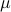

|
Publications and Talks
Publications
Working Paper
Y. Liao, Y. Weng, R. Rajagopal, “Line Parameter Estimation in Urban Secondary Distribution Grid via Two-Stage Grouping”.
Journal
Y. Liao, R. Rajagopal, “Sequential Multiple Structural Damage Detection and Localization: A Distributed Approach”, Structural Health Monitoring, submitted.
Y. Liao, Y. Weng, C-W. Tan, R. Rajagopal, “Fast Distribution Grid Line Outage Identification with PMU”, IEEE Transactions on Smart Grid: Special Section on Theory and Application of PMUs in Power Distribution Systems, submitted.
Y. Liao, Y. Weng, G. Liu, Z. Zhao, C-W. Tan, R. Rajagopal, “Unbalanced Three-Phase Distribution Grid Topology Estimation and Bus Phase Identification”, IET Smart Grid, submitted.
Y. Liao, A.S. Kiremidjian, R. Rajagopal, C.H. Loh, “Structural Damage Detection and Localization with Unknown Post-Damage Feature Distribution Using Sequential Change-Point Detection Method”, ASCE Journal of Aerospace Engineering, 32(2): 04018149, 2018, DOI: 10.1061/(ASCE)AS.1943-5525.0000979.
Y. Liao, Y. Weng, R. Rajagopal, “Urban MV and LV Distribution Grid Topology Estimation via Group Lasso”, IEEE Transactions on Power Systems, September 2018, DOI: 10.1109/TPWRS.2018.2868877.
Y. Weng, Y. Liao, R. Rajagopal, “Distributed Energy Resources Connectivity Identification via Graphical Modeling”, IEEE Transactions on Power Systems, 32(4): 2682-2694, July 2017.
Y. Liao, M. Mollineaux, R. Hsu, R. Bartlett, A. Singla, A. Raja, R. Bajwa, R. Rajagopal, “SnowFort: An open source wireless sensor network for data analytics in infrastructure and environmental monitoring”, IEEE Sensors Journal: Special Issue on Sensing Technologies for Intelligent Urban Infrastructures, 14(12): 4253-4263, December 2014.
Conference
Y. Liao, A.S. Kiremidjian, R. Rajagopal, C.H. Loh, “Experimental Validation of an Improved Dynamic Displacement Estimation Method using Accelerometer and Gyroscope”, International Workshop on Structural Health Monitoring (IWSHM2017) at Stanford, CA, September 2017.
S.K. Huang, Y. Liao, C.M. Chang, C.H. Loh, A.S. Kiremidjian, R. Rajagopal, “Use of Time-frequency Damage Sensitive Features for Structural Damage Diagnosis”, International Workshop on Structural Health Monitoring (IWSHM2017) at Stanford, CA, September 2017.
Y. Liao, Y. Weng, C.W. Tan, R. Rajagopal, “Urban Distribution Grid Line Outage Identification”, 2016 International Conference On Probability Methods Applied to Power Systems (PMAPS 2016) at Beijing, China, October 2016. [PMAPS Roy Billinton Student Paper Gold Award]
Y. Liao, Y. Weng, R. Rajagopal, “Urban Distribution Grid Topology Reconstruction via Lasso”, 2016 IEEE Power and Energy Society General Meeting (PES-GM 2016) at Boston, MA, July 2016.
Y. Liao, A.S. Kiremidjian, R. Rajagopal, C.H. Loh, “Sequential Damage Detection and Localization with Unknown Post-Damage Distribution”, Engineering Mechanics Institute Conference 2016 (EMI 2016) at Nashville, TN, May 2016. [1st Place of Student Paper Competition for Structural Health Monitoring & Control]
J. Andre, A.S. Kiremidjian, Y. Liao, C. Georgakis, R. Rajagopal, “Structural health monitoring approach for detecting ice accretion on bridge cable using the Haar Wavelet Transform”, SPIE Smart Structures/NDE conference 2016 at Las Vegas, NV, March 2016.
Y. Liao, A.S. Kiremidjian, R. Rajagopal, C.H. Loh, “Angular velocity-based Structural Damage Detection”, SPIE Smart Structures/NDE Conference 2016 at Las Vegas, NV, March 2016.
Y. Liao, Y. Weng, M. Wu, R. Rajagopal, “Distribution grid topology reconstruction: an information theoretic approach”, 47th North American Power Symposium (NAPS2015) at Charlotte, NC, October 2015.
Y. Liao, K. Balafas, A.S. Kiremidjian, R. Rajagopal, C.H. Loh, “Application of acceleration-based damage detection algorithms to experimental data from multi-story steel structures”, 10th International Workshop on Structural Health Monitoring (IWSHM2015) at Stanford, CA, September 2015.
Y. Liao, R. Rajagopal, “Message-passing sequential detection of multiple structural damages”, 12th International Conference on Applications of Statistics and Probability in Civil Engineering (ICASP12) at Vancouver, Canada, July 2015.
Y. Liao, K. Balafas, R. Rajagopal, A.S. Kiremidjian, “Sequential damage detection based on the Continuous Wavelet Transform”, SPIE Smart Structures/NDE Conference 2015 at San Diego, CA, March 2015.
D. Brown III, Y. Liao, and N. Fox, “Low-complexity real-time single-tone phase and frequency estimation”, IEEE Military Communications, Oct 2010.
Other
Invited Talks
“Urban Distribution Grid Topology Estimation: Data-Driven Approaches”, Big Data on Power System Applications Panel Session, IEEE PES Asia Pacific Power and Energy Engineering Conference 2016 (APPEEC 2016), Xi'an, China, October 2016.
“Urban Distribution Grid Line Outage Identification”, Dept. of Electrical Engineering, Tsinghua University, Beijing, China, October 2016.
“Structural Damage Detection and Localization: Data-Driven Approaches”, Dept. of Civil Engineering, National Taiwan University, Taiwan, September 2016.
“Distribution Grid Topology Reconstruction: Data-Driven Approaches”, Stanford Smart Grid Seminar, Stanford Univresity, Stanford, CA, March 2016.
Technical Reports
Academic Services
Reviewer, Applied Energy
Reviewer, IEEE Industrial Electronics
Reviewer, IEEE Intelligent Transportation Systems
Reviewer, IEEE Sensors Journal
Reviewer, IEEE Transactions on Smart Grid
Reivewer, IEEE Transactions on Sustainable Energy
Reviewer, Structural Health Monitoring
Reviewer, IEEE International Conference on Communications, Controls, and Computing Technology for Smart Grids (IEEE SmartGridComm) at Aalborg, Denmark, Octomber 2018
Reviewer, IEEE Power Energy Society General Meeting (PES-GM) at Boston, MA, July 2016
Reviewer, International Workshop on Structural Health Monitoring 2015 (IWSHM 2015) at Stanford, CA, September 2015
|